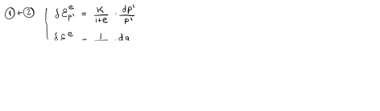
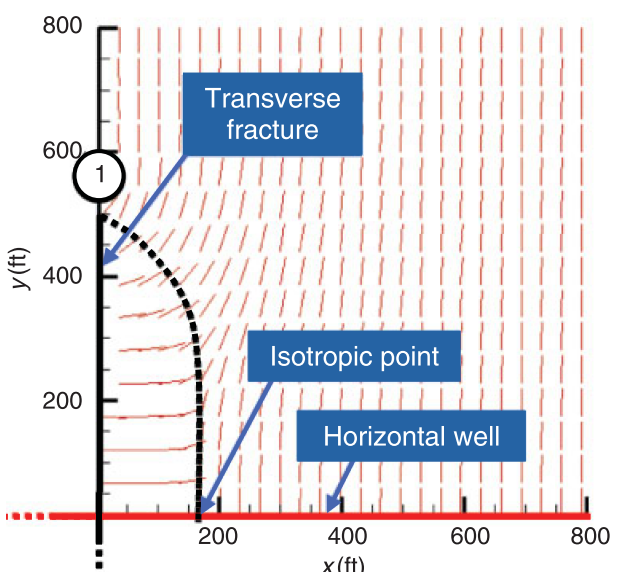
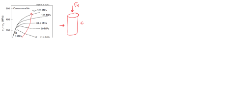
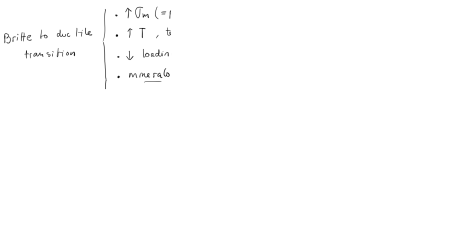

Subsections
This document is a draft.
Find hand written notes here: https://github.com/dnicolasespinoza/GeomechanicsJupyter/tree/master/ClassNotes.
Read the paper “Roussel, N. P., and Sharma, M. M. (2011). Optimizing fracture spacing and sequencing in horizontal-well fracturing. SPE Production and Operations, 26(02), 173-184.” https://doi.org/10.2118/127986-PA.
- Calculate the point of principal stress reversal (isotropic point in Fig. 11 of the paper) with a constant pressure and plane-strain solution utilizing your FreeFEM++ linear elasticity code. Use all parameters as in Table 1. Note:
.
- Repeat the previous task for fracture width 6 mm, 8 mm, and 10 mm. Plot stress reversal distance as a function of fracture width. Hint: You may need to calculate the required net pressure from the analytical solution.
Figure 5.1:
direction around a propped hydraulic fracture (Roussel and Sharma, 2011).
 |
A single hydraulic fracture treatment will be performed in a tight sandstone.
The hydraulic fracture height is expected to be = 170 ft.
The tight sandstone has a plane-strain modulus
 psi.
The (two-wing) injection rate will be 50 bbl/min (constant) during 1 hour.
psi.
The (two-wing) injection rate will be 50 bbl/min (constant) during 1 hour.
Compute:
- The expected fracture half-length , fracture width at the wellbore , and net pressure  as a function of time with the PKN model (no leak-off) assuming the fracturing fluid has a (constant) viscosity 2 cP.
- The expected fracture half-length , fracture width at the wellbore , and net pressure  as a function of time with the PKN model (no leak-off). Now the fracturing fluid has a viscosity 2 cP with no proppant (initial 10 min), and increases in steps of 10 min with 2 cP in each step (due to increasing proppant concentration).
- What should you do to your solution in order to consider leak-off? Justify and explain briefly the algorithm to calculate , , and .
Hint: convert all quantities to the SI system first